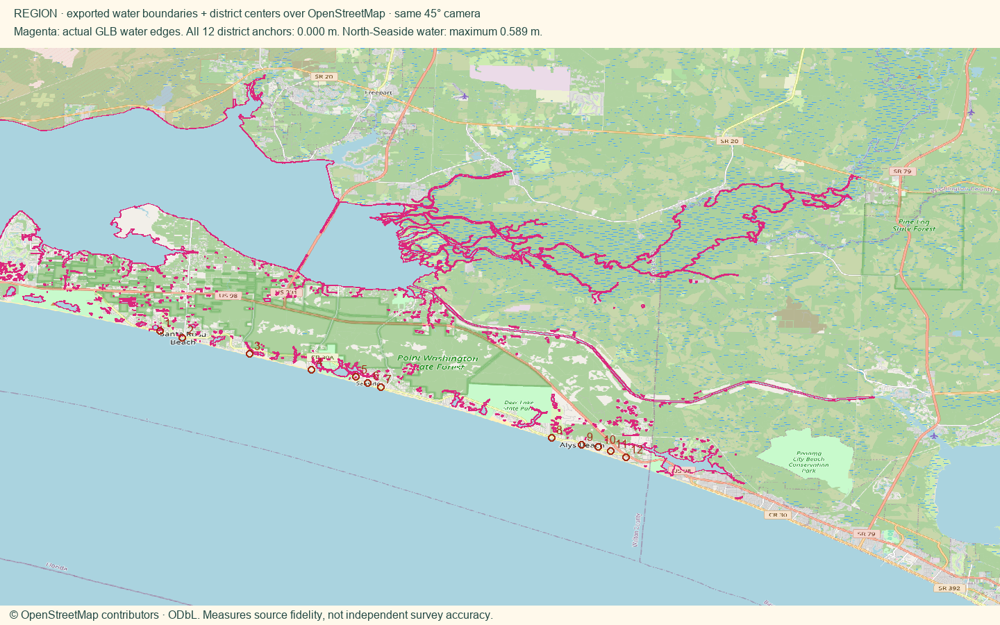
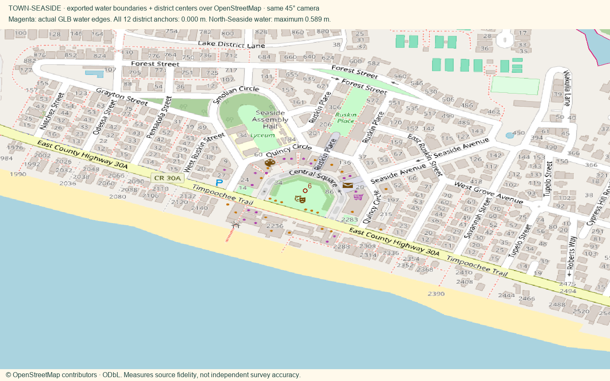
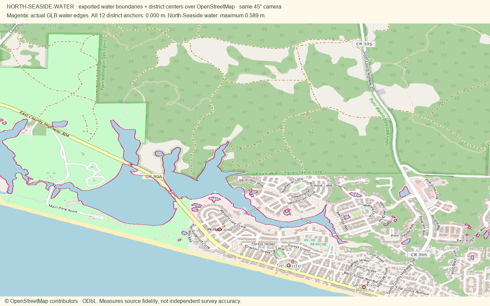

Installed locally. Approved Region anchors and tap-to-Town flow retained. Phone cards collapse controls to a 42 px bar with a 10 px gap; full-screen canvas. Hard roof planes, ridge lines and standing-seam detail. No console errors observed during the six-view checks.
Full measurements and source links · Pavilion placement evidence



Overlays use the map’s 45° orthographic camera projection. Magenta lines are extracted from exported GLB water triangles. Red markers show district centers.
| District / water body | Maximum error | Reference |
|---|---|---|
| Dune Allen | 0.000 m | OSM source |
| Santa Rosa Beach | 0.000 m | OSM source |
| Blue Mountain Beach | 0.000 m | OSM source |
| Grayton Beach | 0.000 m | OSM source |
| WaterColor | 0.000 m | OSM source |
| Seaside | 0.000 m | OSM source |
| Seagrove | 0.000 m | OSM source |
| Watersound | 0.000 m | OSM source |
| Alys Beach | 0.000 m | OSM source |
| Seacrest | 0.000 m | OSM source |
| Rosemary Beach | 0.000 m | OSM source |
| Inlet Beach | 0.000 m | OSM source |
| Western Lake | 0.542 m | OSM source |
| Unnamed water 388644319 | 0.572 m | OSM source |
| Unnamed water 388649627 | 0.299 m | OSM source |
| Unnamed water 388649630 | 0.580 m | OSM source |
| Unnamed water 388649633 | 0.559 m | OSM source |
| Unnamed water 388651914 | 0.589 m | OSM source |
| Unnamed water 388651915 | 0.543 m | OSM source |
| Unnamed water 388654304 | 0.579 m | OSM source |
| Unnamed water 944109245 | 0.028 m | OSM source |
| Unnamed water 944109246 | 0.024 m | OSM source |
| Unnamed water 945921462 | 0.073 m | OSM source |
| Unnamed water 945947593 | 0.194 m | OSM source |
| Unnamed water 945947594 | 0.328 m | OSM source |
| Unnamed water 945947595 | 0.442 m | OSM source |
| Unnamed water 12747686 | 0.357 m | OSM source |
Basemap © OpenStreetMap contributors, ODbL. Attribution and license.